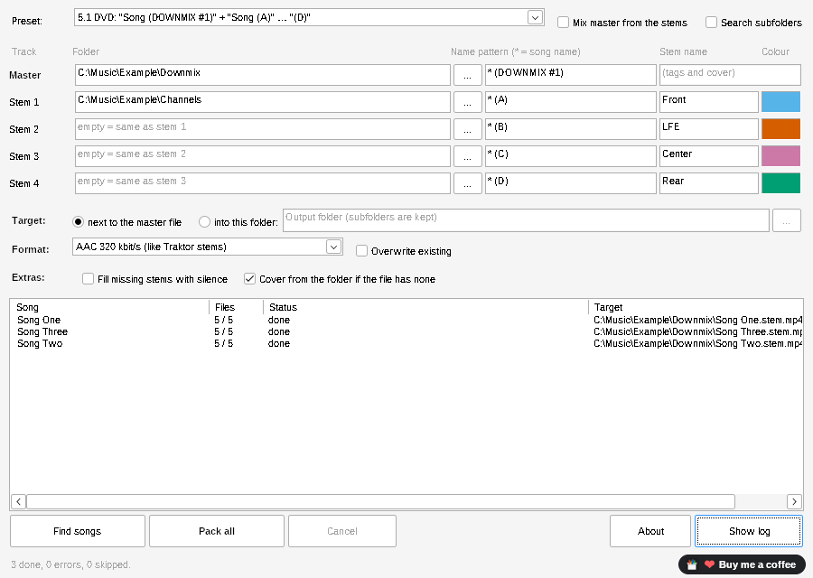
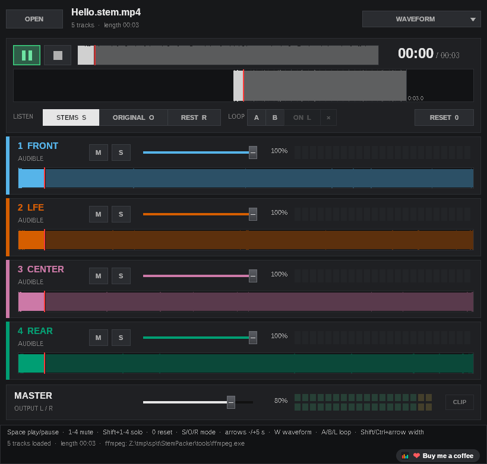

Your own stems as
Traktor stem files, in batches
StemPacker takes tracks you already have, a master and up to four stems per song, and packs them into one .stem.mp4 that Traktor loads as a stem file. No AI, no separation: your files are used exactly as they are. Hundreds of songs in one run, from your DAW, a 5.1 DVD or another tool.
- Free & MIT licensed
- Windows 10 / 11
- Portable, no installation
- No AI, your files as they are
- Batch for whole collections
- Nine languages

Made for stems you already have
Traktor's own Stem Creator packs one song at a time. StemPacker does the same for a whole folder.
Drop a folder, done
StemPacker recognises the usual naming by itself: Song_drums, Song - Bass, Song (Vocals), Song (A) to (D) from a 5.1 DVD, Song_1 to _4 and more, even with master and stems in separate subfolders. No master? It is mixed from the stems.
Or set it up yourself
Unusual names? Tick “Set folders and patterns myself”: a star stands for the song name, for example * (DOWNMIX #1) for the master and * (A) to * (D) for the stems, each in its own folder if you like. Stem names and colours are yours too, for example Front, LFE, Center and Rear.
Tags and cover from the master
Title, artist, album, BPM, key, label and cover are copied from the master file. No title? The song name is used. No cover? cover.jpg or <song>.jpg from the folder.
AAC or lossless ALAC
AAC 320 kbit/s like Traktor's own stems, ALAC lossless 16 bit, or ALAC 24 bit at the original sample rate (still in testing).
Gaps handled
Songs without a finished master: mix it from the stems, without changing the level. A stem missing? The list shows the file name it looked for and a similarly named file, if there is one. Fill it with silence, or skip the song. A track shorter or longer than the master gets a warning.
Listen before Traktor
The download includes StemPlayer: open a finished file and mute or solo each stem, to check the result before it goes into your Traktor collection.
How it works
Four steps, no installation.
- Download and unzipGet
StemPacker-<version>.zip, unzip it anywhere and startStemPacker.exe. The guideStemPacker-User-Guide.pdfis in the same folder. - Drop your folderDrag the folder with your tracks onto the window, or click “Choose folder …”. The naming is detected by itself.
- Check the listThe list shows every song, how many files were found and what is missing.
- Pack allEach song becomes
<song>.stem.mp4next to the master or in a folder of your choice. Load them into Traktor Pro 4.
Check the result with StemPlayer
StemPlayer is included in the download. It plays all four stems of a finished file in sync, with mute, solo and volume per stem, and shows them with the names and colours you set.

Part of the StemMaker family
Elospeed StemMaker separates your own music into stems with AI and packs them as Traktor stem files. StemPacker is for the other case: you already have the stems and only need the stem file.
Questions and answers
Is StemPacker really free?
Yes. StemPacker is open source under the MIT licence. There are no ads, no account and no paid version.
Does it separate music into stems?
No. StemPacker does not use AI. It packs files you already have. To separate a finished song into stems, use StemMaker.
Does it change my files?
No. Your master and stem files are only read. StemPacker writes new .stem.mp4 files. As with any new tool, please try it with copies of a few songs first.
Which files can it read?
WAV, FLAC, AIFF, MP3, M4A, OGG, Opus, W64 and WavPack. Mono files (for example LFE or a center channel) are played on both sides.
My stem file does not load into a Traktor track deck. Why?
That is how Traktor works: stem files only load into stem decks, also the ones made with Native Instruments' own Stem Creator. Switch the deck to a stem deck and load the file again.
A song shows “missing”. What now?
The list names the file it looked for, for example Stem 2 “Hello (B)”, and a similarly named file if it finds one (other spaces, punctuation or upper and lower case). Rename the file and drop the folder again, or adjust the pattern under “Set folders and patterns myself”.
My files are named differently. Does it still work?
Most likely. If the naming is not recognised, StemPacker opens “Set folders and patterns myself”: enter a pattern per track with a star for the song name, for example *-dr for Hello-dr.wav.
Which languages does it speak?
English, German, Spanish, French, Portuguese (Brazil), Italian, Japanese, Dutch and Polish. It uses the language of Windows, or the one set in StemMaker.
Can it read DVDs or cut .cue files?
No, and that is on purpose. Extract the audio with the tools you already use, then let StemPacker pack the files.
Windows shows “Windows protected your PC”. Is that a problem?
StemPacker is not digitally signed, because signing certificates cost money every year. Click “More info” and then “Run anyway”. The full source code is on GitHub, and you can check the download on VirusTotal or build it yourself.
Where can I ask questions or suggest ideas?
In the GitHub Discussions of StemMaker. Reading works without an account, writing needs a free GitHub account.
Ready to pack your stems?
Download the ZIP, try the Example folder, then your own songs.
StemPacker is a one-person hobby project, free for good. If it saves you some time, you can buy me a coffee on Ko-fi ☕ or simply give it a star on GitHub. Both are entirely optional.